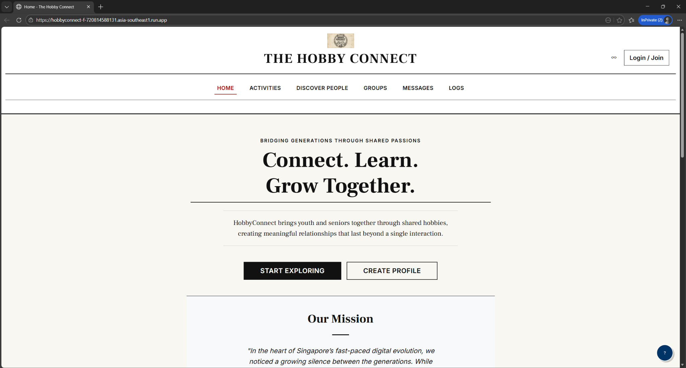
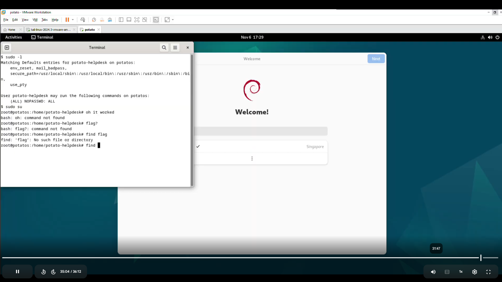

Field Engineer
Broadband installation, routers, ONT/ONR equipment, fibre work, and troubleshooting customer networks.
hello, i'm charles.
I'm studying Cybersecurity & Digital Forensics at Nanyang Polytechnic. This is a small collection of things I've worked on, learned, and built along the way.
Most of what I enjoy is hands-on: setting things up, finding out why they don't work, fixing them, and understanding what went wrong in the first place.
I spend most of my time around cybersecurity, networking, Linux, virtual machines, Python, and small web projects. I also hold ISC2's Certified in Cybersecurity certification.
digital forensics, threat intelligence, penetration testing, system hardening
linux, windows server, vmware esxi, fortigate, google cloud
routers, ont/onr, fibre optics, troubleshooting, broadband services
python, sql, web development, power bi, ux/ui
Broadband installation, routers, ONT/ONR equipment, fibre work, and troubleshooting customer networks.
Built a virtual machine for a cyber range and helped run security awareness training.
Food preparation, cashier work, customer service, and crowd management.
School of IT Club, Lumina Programme, volunteering, and NYP Scholarship (ITE Pathway).
Graduated top in cohort and built a CTF challenge box for vulnerability assessment and exploitation practice.

A web application about bringing youth and seniors together through shared hobbies and activities.
python · sql · web
A deliberately vulnerable VM I made for hardening and penetration-testing practice.
ubuntu · metasploit · pentesting project files ↗